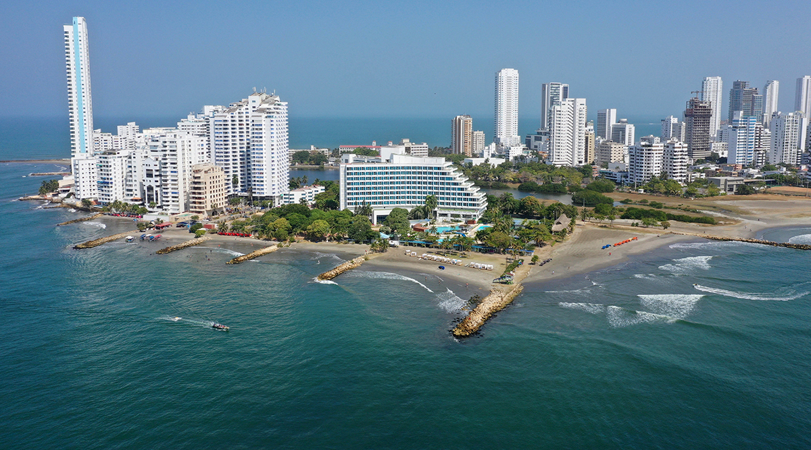

Колу́мбія, офіційно Респу́бліка Колу́мбія — країна в Південній Америці, що межує з Панамою на північному заході, Венесуелою на сході і північному сході, Бразилією на південному сході, Перу і Еквадором на південному заході, з півночі та заходу омивається Карибським морем і Тихим океаном. Колумбія — єдина південноамериканська країна, що має вихід як до Атлантичного (через Карибське море), так і до Тихого океану.
Географія
Природні умови Колумбії дуже різноманітні. Західну частину країни, що становить приблизно 2/5 її площі, займає високогірна область Колумбійських Анд (гopa Крістобаль-Колон, 5800 м) з Прикарибською і Тихоокеанською низовинами. Інші 3/5 території на схід від Анд займають степи, або льянос, басейну Оріноко і дощові ліси, або сельва, басейну Амазонки. Східна частина країни — плоскогір'я, обрамоване Орінокською та Амазонською низовинами. Річкова мережа дуже густа, річки порожисті, головним чином дощового живлення. Головні річки: Магдалена з Каукою, Атрато (впадають у Карибське море), притоки Оріноко — Ґуав'яре і Мета, притоки Амазонки — Путумайо і Какета. З них тільки Магдалена придатна для судноплавства. Клімат екваторіальний та субекваторіальний.
Історія
- Історична хроніка: До приходу іспанців у 1499 році, територія Колумбії належала державам індіанців.
- 1499 рік — іспанські конкистадори проникли на територію країни.
- 1533 рік — засновано іспанський порт Картахену. Встановлення в країні колоніального режиму.
- 1538 рік — м. Богота стала центром колонії, названої «Нова Гранада».
- 1542 рік — землі Колумбії ввійшли до складу віце-королівства Перу.
- 1718 рік — землі Колумбії ввійшли до складу віце-королівства Велика Гранада.
- 1810 рік — початок озброєної боротьби за незалежність під керівництвом Сімона Болівара.
- 1819 рік — розгром іспанських військ у битві при Бояке. Проголошення федеративної республіки Велика Колумбія.
- 1818–1830 роки — Симон Болівар проголошує незалежність Великої Колумбії.
- 1830 рік — розпад федерації та утворення самостійних держав — Колумбії, Венесуели, Еквадору.
- 1832 рік — утворення незалежної республіки Нова Гранада.
- 1851 рік — скасування рабства в країні.
- 1863 рік — Сполучені Штати Колумбії.
- 1886 рік — Унітарна республіка Колумбія. Колумбія здобула повну незалежність від Іспанії
- 1903 рік — зі складу Колумбії вийшла республіка Панама.
- 1932–1934 роки — безрезультатна війна з Перу.
- 1952 рік — пакт про військову допомогу з США.
- 1990-ті роки — війна уряду з наркобізнесом.
- 1996 рік — розгром калійського кокаїнового картелю.
- XX—XXI століття — громадянська війна між урядом і повстанцями з ФАРК.
У 1949 році розпочалася громадянська війна, консерватори та ліберали створили Народний фронт. Віргіліо Барко Вагас був обраний главою держави в 1986 році, в 1989 він оголосив війну наркобізнесу. У 1991 році прийнято нову Конституцію, лідерів наркомафії було заарештовано.
Населення
- Чисельність населення — 47 846 160 осіб
- Щорічний приріст населення — 1,2 %
- Середня тривалість життя — 71 рік у чоловіків і 77,8 року у жінок
- Міське населення — 74 % (у 2008 році)
- Грамотність — 90,4 % (за переписом 2005 року)
Економіка
Є аграрно-індустріальною країною. Основні галузі промисловості: текстильна, харчова, нафтова, хімічна, цементна, гірнича. Транспорт: залізничний, автомобільний, морський, повітряний. Найбільші порти: Картахена, Барранкілья, Буенавентура, Тумако, Ковеньяс і Мамональ (останні два — нафтові). Обсяг повітряних перевезень вантажів наприкінці XX століття різко зріс і склав у 1996 близько 60 тис. тонн.
За даними Index of Economic Freedom, The Heritage Foundation, U.S.A (2001): ВВП — $ 97,5 млрд. Темп зростання ВВП — 0,6 %. ВВП на душу населення — $ 2392. Прямі закордонні інвестиції — $ 1,5 млрд. Імпорт — $ 18 млрд (головним чином США — 41,5 %, Венесуела — 10,0 %, Німеччина — 5,0 %, Японія — 4,3 %). Експорт — $ 15,2 млрд (головним чином США — 48,5 %, Венесуела — 7,9 %, Німеччина — 9,0 %, Італія — 6,0 %).
Обробна промисловість продовжує грати ключову роль в економіці Колумбії; на її частку припадає 19 % ВВП (дані на 1996 рік) і 16 % трудових ресурсів (за даними на 1990 рік). Велика частина обладнання і машин ввозиться з-за кордону. На початку 1990-х років продукція обробних галузей становила 20-30 % від обсягу експорту.
Політика
Більш ніж століття, політика Колумбії була монополізована двома політичними партіями: Ліберальною та Консервативною. Ліберальна партія була створена у 1848 році на засадах антиклерикалізму, федералізму та ліберального шляху ведення економіки. Консервативна (1849 р.) — відстоювала ідеї протекціонізму, централізованої влади та католицизму. Кульмінацією довготривалої боротьби між цими партіями стало створення Народного Фронту, який закріпив чергування влади між двома партіями, дозволяючи кожній бути при владі протягом чотирьох президентських термінів, також була виключена будь-яка можливість заснування інших партій чи політичних угрупувань, що могли отримати владу. Це стало вагомим поштовхом до зародження військового конфлікту всередині держави.
Після розпуску Народного фронту (1974 р.) традиційні політичні об'єднання почали фрагментуватися. Процес поділу партій продовжується з того часу і до сьогодні. Це підтверджується результатами останніх президентських виборів, проведених 28 травня 2006 року, на яких переміг Альваро Урібе з 62 % голосів, обраний на 2-й термін. (Починав свою кар'єру президент Урібе приєднавшись до партії лібералів, та балотувався на посаду президента країни, як незалежний кандидат у рамках свого новоствореного Руху «Спочатку Колумбія» з підтримкою вже Консервативної партії. Приділення великої уваги питанням національної безпеки та ліберальний тип ведення економіки поставили його у «крило правих» в сучасному політичному спектрі.) На другому місці з 22 % голосів був Карлос Ґавіріа, лідер Альтернативно-Демократичного Полюсу (Alternative Democratic Pole), новосформованого соціально-демократичного альянсу, який включає елементи формального руху М-19 (guerilla). Гораціо Сепра (представник ліберальної партії) досягнув 3-го місця з 12 % голосів. Також звернемо увагу на те, що на виборах до уряду, проведених раніше у тому ж році, дві традиційні партії зайняли тільки 93 місця у парламенті з 268 можливих.
У Колумбії активно діє лівий партизанський рух - герілья. Починаючи з листопаду 2011 року його очолює Родріґо Лондоньйо-Ечеверрі.